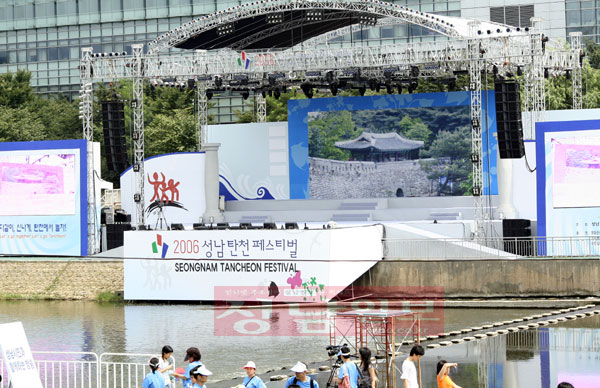

탄천페스티벌 Tancheon Festival

물과 빛, 자연이 어우러진 힐링 축제
성남의 젖줄인 탄천을 배경으로 펼쳐지는 탄천페스티벌은 자연과 인간, 예술이 공존하는 축제입니다. 수변 무대에서 펼쳐지는 화려한 공연과 탄천을 수놓는 빛의 조형물들이 환상적인 야경을 선사합니다. 가족, 연인, 친구와 함께 돗자리를 펴고 앉아 가을밤의 낭만을 즐겨보세요.
| 개최시기 | 매년 가을 (10월 경) |
|---|---|
| 장소 | 탄천 둔치 (야탑교 ~ 매송교 구간) |
| 주요프로그램 | 수상 무대 공연, 미디어 아트, 시민 체험 부스 |
| 문의 | 성남문화재단 031-783-8000 |
| 관련사이트 | https://seongnamfestival.com/ |